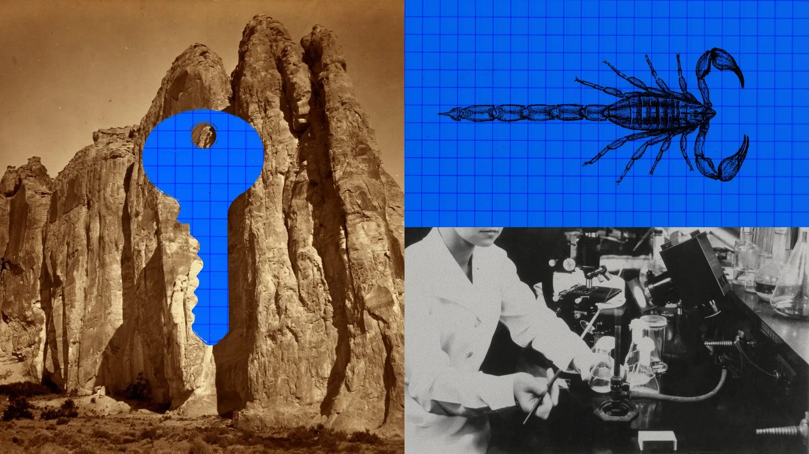
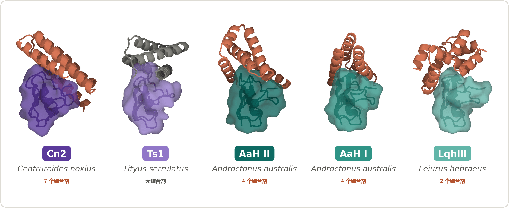
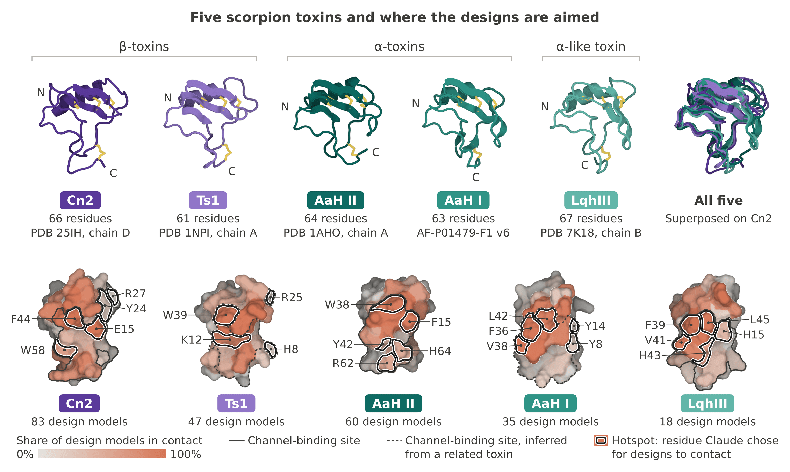
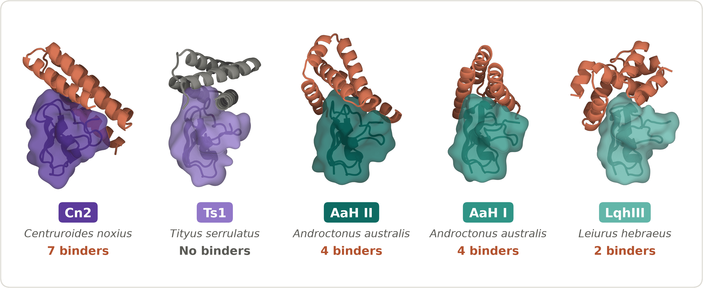
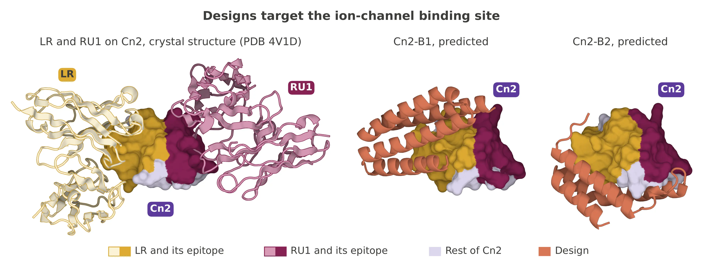

Claude如何设计针对蝎子神经毒素的蛋白质结合剂
📖 中文摘要
专业术语注解
微型结合剂（minibinder）：能紧密附着特定靶标的小蛋白质，多数药物借此起效de novo设计：针对靶标从零计算生成全新蛋白质，而非改造天然抗体解离常数（KD）：衡量结合强度的指标，数值越低结合越紧密表面等离子共振（SPR）：实时追踪毒素与结合剂结合、解离速度以测亲和力的实验方法表位（epitope）：抗体或结合剂在靶标上识别并附着的具体位点📄 中文全文
- 类别： 科学（Science）
- 来源： https://www.anthropic.com/research/claude-scorpion-toxin-binder-design
科学（Science） 2026 年 10 月 20 日 阅读技术报告

已发布 2026 年 10 月 20 日 团队 科学 主题相关文章 * 科学 2026 年 11 月 6 日 教AI构建科学模型
查看更多 摘要：作为我们探索Claude如何帮助加速药物发现工作的一部分，我们让一个内部研究模型针对蝎子神经毒素设计_微型结合剂（minibinders），即能紧密附着到靶标上的小蛋白质。Claude从我们的提示以及四次后续提示出发开展工作，这些提示是我们与金融投资研究公司Citrini Research合作拟定的。Adaptyv Bio和Twist Bioscience的团队对211个设计进行了结合能力的实验测试，其中17个符合我们的标准。我们把全部211个设计及其数据作为资源向该领域公开。_ 今年8月，我们展示了Claude如何在只给定一条提示后设计蛋白质微型结合剂。在我们发布那些结果的一个月前，Citrini Research的一个团队带着一个有趣的问题找到我们：Claude（以及更广泛的AI药物发现）能否让一群有动力的非专业人士去攻克人类健康中的一个真实问题？我们生命科学研究团队的成员着手回答这个问题，首先与Claude一起集思广益筛选题目。我们最终决定请Claude帮忙设计针对蝎子神经毒素的新型蛋白质结合剂，希望它们有朝一日能用于开发蝎子抗毒血清。 蝎子每年蜇伤120万人以上，导致超过3,250人死亡，其中多数是医疗资源有限地区的儿童。新疗法制造成本高昂，也不太可能收回研发成本。由于投入如此之少，蝎子螫伤中毒被描述为一种被忽视的热带病。 我们先把早前蛋白质结合剂研究中用过的同一条提示交给Claude，并在与Citrini合作下作了修改。1在随后的64小时里，一个在Claude Science中运行的内部研究模型基本自主地工作，我们通过四次后续提示引导其方向。在我们的监督下，Claude分析了研究数据、生成了图表，并起草了最终报告。 Claude的设计工作最终产出17个蛋白质结合剂，各自结合四种已知对人类有害的蝎子神经毒素之一。整个过程中，Claude生成了318,484个蛋白质设计，并选出其中180个用于测试。我们的团队在Claude帮助下又补充了31个。我们的合作伙伴Adaptyv Bio和Twist Bioscience是两家合同研究组织（CRO），它们对全部211个设计做了实验室测试，看其能否结合所针对的毒素，结果17个设计符合我们对结合剂的判定标准。我们尚未确认这些结合剂能否在细胞环境中中和蝎毒，因此并不声称已产出抗毒血清。 我们把Claude的工作交给两位外部专家Susana Vázquez Torres和Timothy P. Jenkins审阅，他们认为这项工作是有前景的第一步。如果AI如今能在数天内针对若干难以靶向的毒素设计出可信的结合剂，并在数周内在实验室得到确认，那么理论上这可加速螫伤中毒及其他被忽视疾病的疗法发现。一如既往，挑战在于把这些结合剂变成安全、可负担且广泛可及的药物。 我们在技术报告中给出更多细节，并公开全部211个设计及其数据。
针对几乎任何靶标设计结合剂，如今似乎不再是不切实际的。我们能以惊人速度获得结合极紧密的结合剂，结合本身也不再是主要瓶颈。对于蛇和蝎子这类有毒动物——它们的咬伤和蜇伤导致大量人员死亡或重伤，尤其在服务不足的地区——真正的影响将来自攻克治疗流程中结合之外的环节。挑战在于用这些非凡的工具开发出能成为真正药物的分子，即安全、可负担且广泛可及的药物。 Susana Vázquez Torres，西班牙国家癌症研究中心（CNIO）结构生物学项目博士后研究员，西班牙马德里。
针对四种蝎子的五种毒素设计_de novo_结合剂
蝎毒含有多种蛋白质神经毒素。最可能伤害或杀死人类的神经毒素会附着到_钠通道_上，后者是嵌在神经细胞膜中、使其能够放电的大型蛋白质。钠通道被扰乱时，神经会在错误的时刻放电——这会释放大量应激化学物质，如肾上腺素。严重时，这可导致心力衰竭和肺部积液过多，偶尔造成死亡。
目前已有一些用于蝎子蜇伤的抗毒血清。它们通常用经免疫动物的抗体制成，这一过程可能耗时数月：从数千只蝎子身上采集毒液，用来免疫马匹；科学家再从马血中纯化由此产生的抗体。传统抗毒血清若及早使用可能有效，但通常只对少数几种神经毒素起作用。它们生产成本也高，在许多地区价格昂贵或供应短缺。
De novo_设计提供了一种潜在解决方案。结合剂是能紧密附着特定靶标的分子；抗体便是一个天然例子。原则上，若结合剂靶向神经毒素上抓住钠通道的那一部分，就能阻止毒素抵达通道。在_de novo_设计中，蛋白质结合剂是针对特定靶标从零生成的。这些结合剂通过计算设计，并可针对效价和稳定性等类药性质加以优化，这使其在蜇伤最常发生的地区更容易供应。
我们的方法受到一项早前工作的启发，该工作设计出能中和蛇神经毒素并保护小鼠的_de novo_蛋白质。据我们所知，尚无针对蝎子神经毒素的_de novo_设计结合剂被报道过。
本次工作中，我们选择靶向来自四个地区的五种蝎毒神经毒素：墨西哥（Cn2）、巴西（Ts1）、北非（AaH I和AaH II）以及中东（LqhIII）。我们还决定让设计瞄准每种毒素的通道结合位点。Claude通过检索蛋白质数据银行（PDB）以及AlphaFold数据库（AFDB），挑选用于设计的毒素结构。对每种毒素，它选出五个_热点（hotspots），即毒素上其结合剂设计应当附着的具体氨基酸位置。
 我们主要想知道Claude能否针对_单一_毒素设计结合剂，但也好奇它能否设计同时靶向_多种_毒素的结合剂。尝试设计多毒素结合剂有一个现实理由：它能减少通用抗毒血清鸡尾酒所需的分子数量——而后者将是最具成本效益、且不偏袒特定地区的疗法。我们选这五种蝎子毒素（Cn2、Ts1、AaH I、AaH II和LqhIII）作为多毒素设计的一项高难度测试：它们的蛋白质整体形状共享同一种折叠，但任意两者在氨基酸序列上只有26%到62%相同。
为看看Claude能走多远，我们请它设计四类结合剂：分别针对五种毒素各自的设计；靶向β家族毒素Ts1和Cn2的设计；靶向α家族毒素AaH II、AaH I和LqhIII的设计；以及同时靶向全部五种毒素的设计。
我们主要想知道Claude能否针对_单一_毒素设计结合剂，但也好奇它能否设计同时靶向_多种_毒素的结合剂。尝试设计多毒素结合剂有一个现实理由：它能减少通用抗毒血清鸡尾酒所需的分子数量——而后者将是最具成本效益、且不偏袒特定地区的疗法。我们选这五种蝎子毒素（Cn2、Ts1、AaH I、AaH II和LqhIII）作为多毒素设计的一项高难度测试：它们的蛋白质整体形状共享同一种折叠，但任意两者在氨基酸序列上只有26%到62%相同。
为看看Claude能走多远，我们请它设计四类结合剂：分别针对五种毒素各自的设计；靶向β家族毒素Ts1和Cn2的设计；靶向α家族毒素AaH II、AaH I和LqhIII的设计；以及同时靶向全部五种毒素的设计。
在短短数天内并行设计出针对五种毒素的可信结合剂，是我们在疗法发现中正在经历的AI驱动范式转变的绝佳展示。对动物螫伤中毒这类被忽视疾病尤其如此——由于商业激励低，它们长期缺乏创新。能够以智能体方式攻克动物毒素中格外宽广的靶标空间，为发现带来显著提速，也让切实可行的治疗方案离现实更近。 Timothy P. Jenkins，丹麦技术大学副教授。
Claude以相当高的自主性运行了设计工作
我们最初的提示定义了神经毒素靶标、蛋白质设计与折叠工具，以及新颖性、打分和筛选的规则。除了挑选结构和氨基酸热点，Claude还设定了设计必须达到的质量阈值、决定对每种可用设计工具的依赖程度，并制定了针对多种毒素设计结合剂的策略。 最终，Claude用12种设计工具生成了318,484个设计，并滤除任何类似毒素或已知蛋白质的设计。Claude对553,052个设计—毒素配对进行了共折叠与筛选，把每一对的结构预测为一个复合物。在我们给出最初提示64小时后，它产出了180个设计的最终清单。整项工作耗费约10,000 GPU小时。2 在第一次提示之后，Claude自主工作了24小时。其结果鼓励我们提示Claude继续其工作、寻找更好的设计。我们的后续提示主要集中于引导Claude设计多毒素结合剂。直到第三次后续提示之后，Claude才选出180个设计中的大多数——包括我们最强的结合剂（Cn2-B1）。应我们要求，Claude把蛋白质序列发送给Twist Bioscience（邮件中注明这些序列由Claude撰写），由后者制备蛋白质，以观察它们与毒素结合得如何。随后我们与Claude合作又补充了31个设计，使总数增至211个：60个针对单一毒素的设计（每种毒素12个）、30个针对两种β家族毒素的设计、30个针对三种α家族毒素的设计，以及91个针对全部五种毒素的设计。 在我们团队评估的211个设计中，17个符合结合剂标准，每个都针对单一毒素。针对多种毒素制作的设计，没有一个在不止一种毒素上达标。（除了受其当前能力所限，Claude在这一任务上表现吃力可能还有许多解释，包括我们的提示方式、可用设计工具的局限，甚至多毒素设计在生物学上的可行性。）7个设计是Cn2的结合剂，4个针对AaH II，4个针对AaH I，2个针对LqhIII。在60个单一毒素设计中，11个是结合剂（18%）。这一比率与典型的蛋白质设计工作一致，包括我们此前的研究。

在实验室测试Claude的设计
完成设计工作后，我们把设计交给Adaptyv Bio和Twist Bioscience做结合测试。两家机构都在各自实验室制备了这些设计，但采用不同形式。Adaptyv Bio在_无细胞体系_中表达它们，该体系使用从细菌中提取的蛋白质合成机器，而非活细胞。Twist Bioscience则在哺乳动物细胞（此处为人肾细胞）中，把设计表达为与_Fc_（抗体的柄部）的融合蛋白。这些是测量底层结合过程的互补方式，我们把两者结合以提高结果的可信度。 两家实验室都用_表面等离子共振_（SPR）测量结合：让毒素流过设计，SPR仪器实时追踪毒素与其结合、解离的速度。由此得到的轨迹称为传感图（sensorgram），给出一个名为_解离常数_（KD）的量，用以衡量结合强度（即_亲和力_）。KD越低，结合越紧密。 在评估所得设计时，我们为把一个设计判定为某毒素的结合剂设定了严格标准。该设计必须在两家实验室都是_命中_3——也就是说，它需要在每一次重复中都显示出针对该毒素的结合证据，且每个KD都须达到1 µM或更优。我们还要求该设计对CLEC12A不显示信号，CLEC12A是一种无关的人类蛋白质，用于测量脱靶结合或"黏附性"。
Claude的Cn2结合剂很可能结合与中和毒素抗体相同的位点
抗体和纳米抗体仍是_de novo_设计要超越的标杆。已有三种此类分子被报道对Cn2或AaH II的亲和力（KD）低于1 nM（纳摩尔），并已被证明能保护小鼠免受蝎子毒素侵害。
我们最强的两个结合剂称为Cn2-B1和Cn2-B2，靶向Cn2——一种来自墨西哥蝎_Centruroides noxius_的神经毒素。它们在Adaptyv Bio和Twist Bioscience两家都紧密结合Cn2，亲和力（KD）处于个位数纳摩尔范围。
判断两个分子（例如抗体与微型蛋白）是否结合靶标上同一位点的一种方法，是做_竞争实验_，它检验两种结合剂能否同时附着到靶标上_。若某一分子的存在降低了另一分子的结合，它们很可能竞争同一结合位点。
我们的竞争实验表明，每个Cn2结合剂都附着在一种名为LR的抗体所结合的同一_表位（epitope）（结合位点）上或其附近，该抗体已被报道可在小鼠中中和Cn2。LR的结合位点覆盖Cn2上附着钠通道、导致神经异常放电的那一部分。我们尚未在细胞环境或活体动物中测试最强的结合剂Cn2-B1和Cn2-B2，但它们与LR竞争这一事实表明，它们很可能能中和Cn2。

结合剂只是开发抗毒血清的第一步
我们的结果只显示了对_重组_毒素的结合，这类毒素由每种毒素的基因在实验室中培养得到，而非从毒液中纯化。本研究最大的两点局限是：我们没有测试任何设计在_体外（in vitro）（针对实验室培养的细胞）的中和能力，也没有测试其_体内（in vivo）（在活体动物如小鼠中）的效力。 若要推进一个设计走向疗法，Cn2-B1会是我们最有力的候选之一。不过首先，我们需要确认该设计也能结合从毒液中纯化的毒素。随后用膜片钳记录（可测量流经钠通道的电流）在_体外（in vitro）_评估其功能，看它是否阻止毒素作用于通道。接着，还需在小鼠中测试该结合剂，看它是否真的起到保护作用。除中和毒素外，疗法还必须安全、稳定、可负担，并能在蜇伤发生地获得。要让药物抵达患者，也离不开临床医生、资助方与政策制定者的合作。 我们公开全部211个设计及其结合数据，以便其他研究者在我们工作的基础上继续推进。我们希望，这次对Claude能力的展示连同所公开的数据，能帮助加速抗毒血清设计的进一步研究。
延伸阅读
以下资源就上述结果提供更深入的技术细节和更详尽的信息： * 技术报告； * 数据发布：全部211个设计、其预测结构与打分以及实验数据； * 我们此前关于蛋白质设计和提升生物分子建模的文章。
脚注
01Citrini撰写了一篇关于我们合作的文章，见此。 02我们意识到这远超多数研究者所能获得的资源。另方面，我们已把这些模型的速度平均提升约4倍，并表明使用单个智能体、单块GPU、运行24小时的简化提示，也能达到相当的_计算机模拟（in silico）_打分。 03LqhIII仅由Adaptyv Bio评估。
▸ 英文原文（点击展开）
How Claude designed protein binders against scorpion neurotoxins
- Date: 2026-10-20
- Source: https://www.anthropic.com/research/claude-scorpion-toxin-binder-design
How Claude designed protein binders against scorpion neurotoxins
Read the technical report Published Oct 20, 2026 Team Science Topics
Related articles * Science Nov 6, 2026 Teaching AI to build scientific models
View more Summary: As part of our work experimenting with how Claude can help accelerate drug discovery, we asked an internal research model to design _minibinders (small proteins that attach tightly to a target) against scorpion neurotoxins. Claude worked from our prompt and four follow-ups, which we developed in collaboration with the financial investment research firm Citrini Research. Teams at Adaptyv Bio and Twist Bioscience experimentally tested 211 designs for binding. Of these, 17 met our criteria. We’re releasing all 211 designs and their data as a resource for the field._ In August, we showed how Claude designed protein minibinders after being given a single prompt. A month before we released those results, a team from Citrini Research had approached us with an interesting question: could Claude (and AI drug discovery more generally) enable a group of motivated nonexperts to tackle a genuine problem in human health? Members of our life science research team set out to answer this, first by brainstorming problems with Claude. We landed on asking for Claude’s help designing novel protein binders against scorpion neurotoxins, with the hope that they could one day be used to develop a scorpion antivenom. Scorpions sting 1.2 million people or more every year, resulting in more than 3,250 deaths, mostly among children in parts of the world with limited access to medical care. New treatments are expensive to make, and are also unlikely to earn back the cost of developing them. With so little investment, scorpion envenomation has been described as a neglected tropical disease. We started by giving Claude the same prompt we’d used in our earlier protein-binder study, after modifying it with Citrini.1 Over the next 64 hours, an internal research model, operating within Claude Science, worked mainly autonomously, although we directed its work with four follow-ups. Under our supervision, Claude analyzed the research data, generated the figures, and drafted the final report. Claude’s design campaign produced 17 protein binders that each bind to one of four scorpion neurotoxins that are known to be dangerous to humans. Throughout the process, Claude generated 318,484 protein designs and selected 180 of them for testing. Our team added 31 more, with Claude’s help. Our partners at Adaptyv Bio and Twist Bioscience, two contract research organizations (CROs), lab-tested all 211 designs to see if they would bind to the toxins they were designed against, and 17 designs met our criteria for a binder. We have not confirmed whether these binders neutralize scorpion venom in a cellular environment, so we do not claim to have produced an antivenom. We sent Claude’s work to two outside experts, Susana Vázquez Torres and Timothy P. Jenkins, who said they felt this work was a promising first step. If AI can now design credible binders against several hard-to-target toxins in days and they can be confirmed in the lab within weeks, this could, in theory, speed up discovery for envenomation and other neglected diseases. The challenge, as always, is turning those binders into safe, affordable, and widely accessible drugs. We share more detail in our technical report, and are making all 211 designs and their data available.
Designing a binder against almost any target no longer seems unrealistic. We can now obtain very tight binders remarkably quickly, and binding itself is no longer the main bottleneck. For venomous animals such as snakes and scorpions, whose bites and stings kill or seriously injure large numbers of people, particularly in underserved regions, the real impact will come from tackling the parts of the therapeutic pipeline that go beyond binding. The challenge is to use these extraordinary tools to develop molecules that can become real drugs, ones that are safe, affordable, and widely accessible. Susana Vázquez Torres , Postdoctoral Researcher, Structural Biology Programme, Spanish National Cancer Research Centre (CNIO), Madrid, Spain.
Designing de novo binders against five toxins from four species of scorpions
Scorpion venom contains multiple protein neurotoxins. The neurotoxins that are most likely to harm or kill humans attach to sodium channels , large proteins embedded in the membranes of nerve cells that allow them to fire. When sodium channels are disrupted, nerves fire at the wrong time—this releases large amounts of stress chemicals, like adrenaline. In severe cases, this can cause heart failure and excess fluid buildup in the lungs, occasionally resulting in death. There are some antivenoms available for scorpion stings. They’re generally made using the antibodies of immunized animals, a process that can take months. Venom is milked from thousands of scorpions and used to immunize horses; scientists then purify the resulting antibodies from the horses’ blood. Traditional antivenoms can work when given early, but they’re usually effective for only a small number of neurotoxins. They’re also expensive to produce, and in many regions are costly or in short supply. De novo design offers a potential solution. A binder is a molecule that attaches tightly to a specific target; antibodies are one natural example. In principle, a binder that targets the part of a neurotoxin that latches onto sodium channels could stop the toxin from reaching the channel. In de novo design, protein binders are generated from scratch against a specific target. These binders are designed computationally and can be optimized for druglike properties such as potency and stability, which could make them easier to supply in regions where stings most often occur. Our approach was inspired by an earlier effort that designed de novo proteins that neutralized snake neurotoxins and protected mice. To our knowledge, no de novo -designed binders against scorpion neurotoxins have been described. For this campaign, we chose to target five scorpion-venom neurotoxins across four regions: Mexico (Cn2), Brazil (Ts1), North Africa (AaH I and AaH II), and the Middle East (LqhIII). We also chose to aim the designs at each toxin’s channel-binding site. Claude picked the toxin structures to use for design by searching the Protein Data Bank (PDB) as well as the AlphaFold database (AFDB). For each toxin, it selected five hotspots , specific amino acid positions on the toxin that its binder designs were meant to latch onto.

We were primarily wondering if Claude could design binders against individual toxins. But we were also curious if Claude could design binders that targeted multiple toxins. There’s a practical reason for trying to design multitoxin binders, namely that it would reduce the number of molecules needed for a universal antivenom cocktail—which would be the most cost-effective and regionally neutral treatment. We selected these five scorpion toxins (Cn2, Ts1, AaH I, AaH II, and LqhIII) as a challenging test of multitoxin design: they share one fold for the overall shape of the protein, but any two are only 26% to 62% identical in their amino acid sequences. To see how far Claude could go, we asked it to design four kinds of binders: binders against each of the five toxins individually; binders that targeted the β-family toxins Ts1 and Cn2; binders that targeted the α-family toxins AaH II, AaH I, and LqhIII; and binders that targeted all five toxins simultaneously.Designing credible binders against five toxins in parallel, in a matter of days, is a great showcase of the AI-driven paradigm shift we are seeing in therapeutic discovery. This is especially true for neglected diseases such as animal envenomings, which have been largely starved of innovation due to low commercial incentives. Being able to agentically tackle the uniquely broad target space across animal toxins provides a significant speed-up in discovery, and brings realistic therapeutic solutions much closer. Timothy P. Jenkins , Associate Professor, Technical University of Denmark.
Claude ran the design campaign with considerable autonomy
Our initial prompt defined the neurotoxin targets, the protein design and folding tools, and the rules for novelty, scoring, and filtering. Beyond choosing the structures and amino acid hotspots, Claude also set the quality thresholds a design had to clear, decided how much to lean on each available design tool, and developed the strategies for designing binders against multiple toxins. Ultimately, Claude used 12 design tools to generate 318,484 designs, filtering out any that resembled a toxin or a known protein. Claude co-folded and screened 553,052 design-toxin pairs, predicting each pair’s structure as one complex. Sixty-four hours after we gave Claude our initial prompt, it produced its final list of 180 designs. The campaign used on the order of 10,000 GPU hours.2 Claude worked autonomously for 24 hours following our first prompt. Its results encouraged us to prompt Claude to continue its campaign and look for better designs. Our follow-up prompts were mainly focused on directing Claude to design a multitoxin binder. Claude selected most of the 180 designs—including our strongest binder (Cn2-B1)—only after our third follow-up. At our request, Claude sent the protein sequences to Twist Bioscience (in emails indicating they were written by Claude), which produced the proteins in order to see how well they would bind to the toxins. We later worked with Claude to add another 31 designs, increasing the total to 211 designs: 60 designs against a single toxin (12 per toxin), 30 designs against the two β-family toxins, 30 designs against the three α-family toxins, and 91 designs against all five toxins. Of the 211 designs our teams assessed, 17 met our criteria for a binder, each against a single toxin. None of the designs made against multiple toxins met our criteria for more than one. (Beyond being limited by its current capabilities, there could be many explanations for why Claude struggled with this, including our prompting, the limitations of available design tools, and even the biological feasibility of multitoxin design.) Seven designs were binders against Cn2, four against AaH II, four against AaH I, and two against LqhIII. Among the 60 single-toxin designs, 11 were binders (18%). This rate is consistent with typical protein design campaigns, including our previous work.

Testing Claude's designs in the lab
After completing the campaign, we sent the designs to Adaptyv Bio and Twist Bioscience to test them for binding. Each group produced the designs in their labs, but in different formats. Adaptyv Bio expressed them in a cell-free system , which uses protein-making machinery extracted from bacteria rather than living cells. Twist Bioscience expressed the designs in mammalian cells (in this case, human kidney cells) as fusions to Fc , the stem of an antibody. These are complementary ways to measure the underlying binding process, and we combined them in order to improve confidence in our results. Both labs measured binding by surface plasmon resonance (SPR), in which a toxin flows over the design while the SPR instrument tracks in real time how quickly a toxin binds to and detaches from it. The resulting trace, called a sensorgram, produces a measurement known as the dissociation constant (KD), which is a measurement for binding strength (or affinity). The lower the KD, the tighter the binding. When it came to evaluating the resulting designs, we set out strict criteria for labeling a design a binder against a toxin. The design needed to be a hit at both labs3—that is, it needed to show evidence of binding against that toxin in every replicate, and every KD needed to be 1 µM or tighter. We also required that the design show no signal against CLEC12A, an unrelated human protein used to measure off-target binding or “stickiness.”
Claude’s Cn2 binders likely bind the same site as a toxin-neutralizing antibody
Antibodies and nanobodies remain the standard for de novo designs to beat. Three such molecules have reported affinities (KD) below 1 nM (nanomolar) against Cn2 or AaH II, and they have been shown to protect mice from scorpion toxins. Our two strongest binders, which we call Cn2-B1 and Cn2-B2, target Cn2, a neurotoxin from the Mexican scorpion Centruroides noxius. They each bound Cn2 tightly at both Adaptyv Bio and Twist Bioscience, with affinities (KD) in the single-digit nanomolar range. One way to find out whether two molecules (e.g., an antibody and a miniprotein) bind the same site on a target is with a competition experiment, which tests whether both binders can attach to the target at the same time . If the presence of one molecule reduces the other molecule’s binding, then they likely compete for the same binding site. Our competition experiments suggest our Cn2 binders each attach on or near the same epitope (binding site) as an antibody called LR, which has been reported to neutralize Cn2 in mice. LR’s binding site covers the part of Cn2 that attaches to the sodium channel and causes nerves to misfire. We have not tested our strongest binders, Cn2-B1 and Cn2-B2, in a cellular environment or in live animals, but the fact that they compete with LR suggests that they will likely neutralize Cn2.

A binder is only the first step to developing an antivenom
Our results show binding only against recombinant toxins, which are grown in the lab from each toxin’s gene rather than purified from venom. The two biggest limitations of this study are that we didn’t test any design for neutralization in vitro (against cells grown in the lab) or for efficacy in vivo(in living animals, such as mice). If we were to advance one design toward a therapy, Cn2-B1 would be one of our strongest candidates. First, though, we would need to confirm the design also binds toxin purified from venom. We would then assess it for function in vitro with patch-clamp recordings (which can measure the electrical current passing through sodium channels) to see whether it stops the toxin from acting on the channel. Then, we would need to test the binder in mice to see whether it actually protects them. Beyond neutralizing the toxin, a treatment must also be safe, stable, affordable, and available where stings occur. Reaching patients will also take cooperation from clinicians, funders, and policymakers. We are releasing all 211 designs and their binding data so that other researchers can build on our work. We hope this demonstration of Claude’s capabilities, along with the data we are releasing, will help accelerate further research into antivenom design.
Further reading
The following resources provide further technical depth and more detailed information about the results described above: * Technical report; * Data release: all 211 designs, their predicted structures and scores, and experimental data; * Our previous posts on protein design and uplifting biomolecular modeling.
Footnotes
01Citrini has written an article on our collaboration, here. 02We realize this is much more than most researchers have access to. Separately, we have made these models about 4x faster on average, and shown that a simplified prompt using a single agent and a single GPU over 24 hours reaches comparable in silico scores. 03LqhIII was assessed only by Adaptyv Bio.